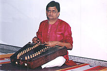

The santoor is a trapezoid-shaped hammered dulcimer or string musical
instrument made of walnut, with seventy-two strings. It is the national musical
instrument of Iran, and is also native to Jammu and Kashmir.
It dates back to
ancient times, and was called Shatha Tantri Veena in ancient Sanskrit texts. A
primitive ancestor of this type of instrument was used in Mesopotamia (1600-911
BC) and Babylonia.

Development:
In ancient Sanskrit texts, it has been referred to as shatatantri vina
(100-stringed vina).In Kashmir the santoor was used to accompany the folk music.
It is played in a style of music known as the Sufiana Mausiqi. The Sufi mystics
used it as an accompaniment to their hymns.
In Indian santoor
playing, the specially-shaped mallets (mezrab) are lightweight and are held
between the index and middle fingers. A typical santoor has two sets of bridges,
providing a range of three octaves. The Indian santoor is more rectangular and
can have more strings than its Persian counterpart, which generally has 72
strings. Musical instruments very similar to the santoor are traditionally used
all over the world.
Characteristics:
The trapezoid framework is generally made out of either walnut or maple wood.
The top and bottom boards sometimes can be either plywood or veneer. On the top
board, also known as the soundboard, wooden bridges are placed, in order to seat
stretched metal strings across.
The strings, grouped in units of 3 or 4, are
tied on nails or pins on the left side of the instrument and are stretched over
the sound board on top of the bridges to the right side. On the right side there
are steel tuning pegs or tuning pins, as they are commonly known, that allows
tuning each unit of strings to a desired musical note or a frequency or a pitch.
Technique:
The santoor is played while sitting in an asana called ardha-padmasana position
and placing it on top of the lap. While playing, the broad side is closer to the
waist of the musician and the shorter side is away from the musician. It is
played with a pair of light wooden mallets or hammers with both hands.
The
santoor is a very delicate instrument and is very sensitive to light strokes and
glides. The strokes are played always on the strings either closer to the
bridges or a little away from bridges. Both styles result in different tones.
Sometimes strokes by one hand can be muffled by the other hand by using the face
of the palm just to create variety.
Notable players:
Shivkumar Sharma.
Bhajan Sopori.
Tarun Bhattacharya.
R. Visweswaran.
Rahul Sharma.
Ulhas Bapat.